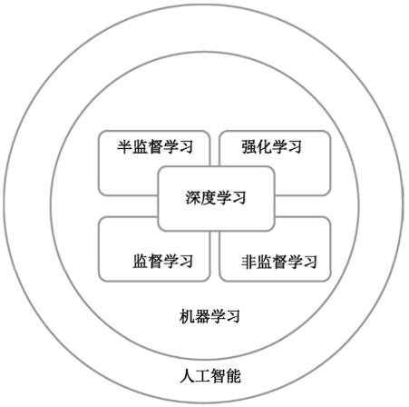
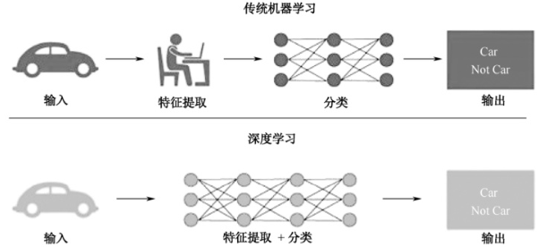
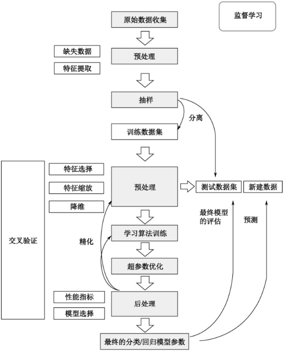
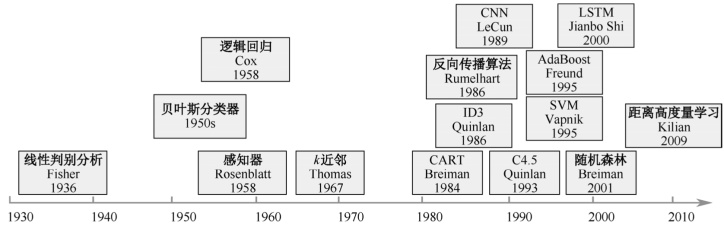
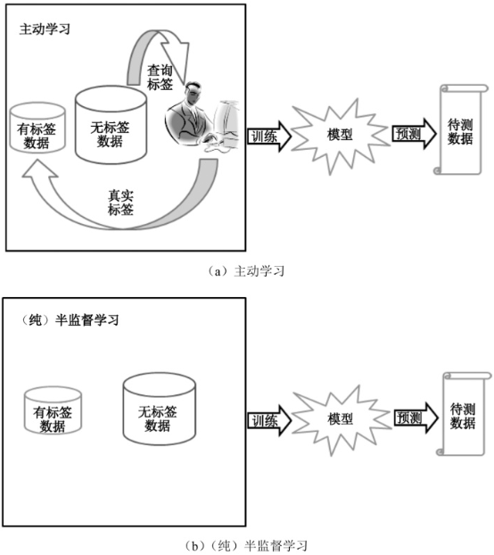
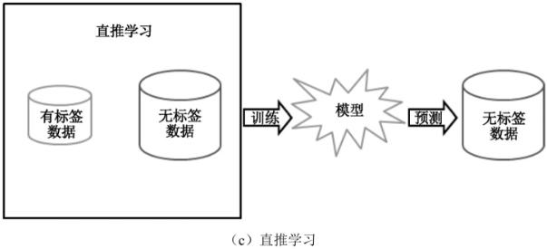
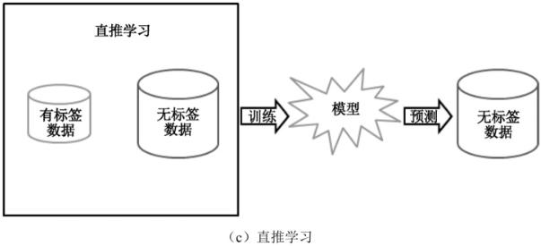
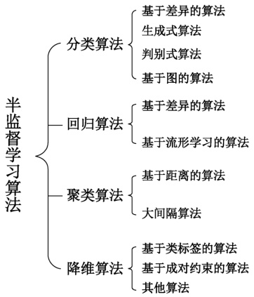

首页 > 编程笔记
机器学习的分类及其典型算法（非常全面）
机器学习算法有很多，如线性回归、朴素贝叶斯、随机森林、支持向量机、神经网络等。
机器学习算法按照学习方式分类，可以分为监督学习（Supervised Learning）、非监督学习（Unsupervised Learning）、半监督学习（Semi-supervised Learning）、强化学习（Reinforcement Learning）。
按照学习策略分类，可以分为机械学习、示教学习、类比学习、基于解释的学习、归纳学习。
按照学习任务分类，可以分为分类、回归、聚类。
按照应用领域分类，可以分为自然语言处理、计算机视觉、机器人、自动程序设计、智能搜索、数据挖掘和专家系统。
深度学习是机器学习的一个分支，它与机器学习的关系如图1所示。
深度学习的实质是深度神经网络，一般的神经网络有 3～4 层，而深度神经网络包含上百层，深度学习的提出和发展归功于大数据的出现和计算性能的提高。
深度学习和传统机器学习的共同点是对数据进行分析，不同之处在于：
图2是传统机器学习和深度学习过程的区别。
监督学习流程图如图3所示，其中包括准备数据、数据预处理、特征提取和特征选择、训练模型和评价模型。
Step1：准备数据。
监督学习首先要准备数据，没有现成的数据就需要采集数据或者爬取数据，或者从网站上下载数据。可以将准备好的数据集分为训练集、验证集和测试集。训练集是用来训练模型的数据集，验证集是确保模型没有过拟合的数据集，测试集是用来评估模型效果的数据集。
Step2：数据预处理。
数据预处理主要包括重复数据检测、数据标准化、数据编码、缺失值处理、异常值处理等。
Step3：特征提取和特征选择。
特征提取是结合任务自身特点，通过结合和转换原始特征集，构造出新的特征。特征选择是从大规模的特征空间中提取与任务相关的特征。特征提取和特征选择都是对原始数据进行降维的方法，从而去除数据的无关特征和冗余特征。
Step4：训练模型。
模型就是函数，训练模型就是利用已有的数据，通过一些方法确定函数的参数。
Step5：评价模型。
对于同一问题会有不同的数学模型，通过模型指标的比较来选取最优模型；对同一数学模型，通过模型指标的比较来调整模型参数。模型评价的基本思路是采用交叉验证方法。
其中典型的监督学习算法有朴素贝叶斯、决策树、支持向量机、逻辑回归、线性回归、k近邻等，常见的8种监督学习算法的特点如表1所示。
常见的非监督学习算法主要有三种：聚类、降维和关联。聚类算法是非监督学习中最常用的算法，它将观察值聚成一个一个的组，每个组都含有一个或几个特征。聚类的目的是将相似的东西聚在一起，而并不关心这类东西具体是什么。降维指减少一个数据集的变量数量，同时保证传达信息的准确性。关联指的是发现事物共现的概率。
如何在少量的有标签样本下，利用大量的无标签样本改善机器学习性能，成为机器学习研究者关注的问题之一。
目前，利用无标签样本的主流技术有（纯）半监督学习、直推学习和主动学习，这三种学习方式的共同点是利用大量无标签样本来辅助少量有标签样本的学习，如图5所示。
图5所示三种机器学习方式的相同点是训练数据集中都包含少量的有标签数据和大量的无标签数据，利用这些数据对模型进行训练。
不同点在于主动学习将抽取部分无标签数据，交由专家进行人工标注，将标注后的数据放入有标签数据集中，一起对模型进行训练。而（纯）半监督学习和直推学习没有专家对训练数据集中的无标签数据进行标注的过程。
（纯）半监督学习和直推学习的不同之处在于训练完的模型预测的对象不同，（纯）半监督学习是预测待测数据，而直推学习是预测训练数据集中的无标签数据。
半监督学习中两个常用的假设是聚类假设和流形假设：
半监督分类算法的基本思想是在无标签样本的帮助下训练有标签样本，获得比单独使用有标签样本更好的分类器，弥补有标签样本不足的缺陷。
半监督回归算法的基本思想是在无输出的输入的帮助下训练有输出的输入，获得比只使用有输出的输入训练得到的回归器性能更好的回归器。
半监督聚类算法的基本思想是在有标签的样本信息的帮助下，获得比只使用无标签的样本更好的簇，提高聚类的精度。
半监督降维算法的基本思想是在有标签的样本信息的帮助下，找到高维输入数据的低维结构，同时保持原始高维数据和成对约束的结构不变。
机器学习算法按照学习方式分类，可以分为监督学习（Supervised Learning）、非监督学习（Unsupervised Learning）、半监督学习（Semi-supervised Learning）、强化学习（Reinforcement Learning）。
按照学习策略分类，可以分为机械学习、示教学习、类比学习、基于解释的学习、归纳学习。
按照学习任务分类，可以分为分类、回归、聚类。
按照应用领域分类，可以分为自然语言处理、计算机视觉、机器人、自动程序设计、智能搜索、数据挖掘和专家系统。
深度学习是机器学习的一个分支，它与机器学习的关系如图1所示。

图1：深度学习与机器学习的关系
图1：深度学习与机器学习的关系
深度学习的实质是深度神经网络，一般的神经网络有 3～4 层，而深度神经网络包含上百层，深度学习的提出和发展归功于大数据的出现和计算性能的提高。
深度学习和传统机器学习的共同点是对数据进行分析，不同之处在于：
- 传统机器学习需要人工对数据进行特征提取，然后应用相关算法对数据进行分类，利用已有数据特征和数据标签（或者没有数据标签）对数学模型进行训练以达到最优，继而对新数据进行分类和预测。
- 深度学习不需要人工对训练数据进行特征提取，直接利用深度神经网络对数据特征进行自学习、分类，因此人类也不知道机器是如何进行学习的。
图2是传统机器学习和深度学习过程的区别。

图2：传统机器学习和深度学习过程的区别
图2：传统机器学习和深度学习过程的区别
1. 监督学习
1) 监督学习的定义
监督学习是指在给定的训练集中“学习”出一个函数（模型参数），当新的数据到来时，可以根据这个函数预测结果。监督学习的训练集要求包括输入和输出，即特征值和目标值（标签），训练集中数据的目标值（标签）是由人工事先进行标注的。监督学习流程图如图3所示，其中包括准备数据、数据预处理、特征提取和特征选择、训练模型和评价模型。

图3：监督学习流程图
图3：监督学习流程图
Step1：准备数据。
监督学习首先要准备数据，没有现成的数据就需要采集数据或者爬取数据，或者从网站上下载数据。可以将准备好的数据集分为训练集、验证集和测试集。训练集是用来训练模型的数据集，验证集是确保模型没有过拟合的数据集，测试集是用来评估模型效果的数据集。
Step2：数据预处理。
数据预处理主要包括重复数据检测、数据标准化、数据编码、缺失值处理、异常值处理等。
Step3：特征提取和特征选择。
特征提取是结合任务自身特点，通过结合和转换原始特征集，构造出新的特征。特征选择是从大规模的特征空间中提取与任务相关的特征。特征提取和特征选择都是对原始数据进行降维的方法，从而去除数据的无关特征和冗余特征。
Step4：训练模型。
模型就是函数，训练模型就是利用已有的数据，通过一些方法确定函数的参数。
Step5：评价模型。
对于同一问题会有不同的数学模型，通过模型指标的比较来选取最优模型；对同一数学模型，通过模型指标的比较来调整模型参数。模型评价的基本思路是采用交叉验证方法。
2) 监督学习的任务
监督学习有两个主要任务：回归和分类。回归用于预测连续的、具体的数值；分类是对各种事物进行分类，用于离散预测。3) 监督学习具体算法
监督学习算法发展史如图4所示。

图4：监督学习算法发展史
图4：监督学习算法发展史
其中典型的监督学习算法有朴素贝叶斯、决策树、支持向量机、逻辑回归、线性回归、k近邻等，常见的8种监督学习算法的特点如表1所示。
| 算法名称 | 类型 | 特点 | 应用 |
|---|---|---|---|
| 朴素贝叶斯 | 分类 | 通过一个给定的元组属于一个特定的概率来进行分类 | 文本分类、垃圾邮件分类、信用评估 |
| 决策树 | 分类 | 通过训练数据构建决策树，对未知数据进行分类 | 科学决策、风险评估、金融分析 |
| 支持向量机 | 分类 | 通过最大化分类边界点与分类平面的距离来实现分类 | 模式识别、文本分类 |
| 逻辑回归 | 分类 | 处理因变量为分类变量的回归问题，常见的有二分类或项分布问题，也有多分类问题 | 数据挖掘、疾病自动诊断、经济预测 |
| 线性回归 | 回归 | 通过一个超平面拟合数据集 | 流行病研究、金融分析、股市预测 |
| k近邻 | 分类+回归 | 根据距离相近的邻居类别来判定自己所属类别 | 图像分类、模式识别 |
| AdaBoost |
分类+回归
|
通过将一系列弱学习器组合起来，集成弱学习器的学习能力，得到一个强学习器 | 人脸检测、森林火灾预测 |
| 神经网络 | 分类+回归 | 通过对人脑神经元网络进行抽象，建立模型，按照不同的连接方式组成不同的网络 | 模式识别、语音识别、文本分类 |
2. 非监督学习
1) 非监督学习的定义
非监督学习是指在机器学习过程中，用来训练机器的数据是没有标签的，机器只能依靠自己不断探索，对知识进行归纳和总结，尝试发现数据中的内在规律和特征，从而对训练数据打标签。2) 非监督学习的任务
非监督学习的训练数据是无标签的，非监督学习的目标是对观察值进行分类或者区分。常见的非监督学习算法主要有三种：聚类、降维和关联。聚类算法是非监督学习中最常用的算法，它将观察值聚成一个一个的组，每个组都含有一个或几个特征。聚类的目的是将相似的东西聚在一起，而并不关心这类东西具体是什么。降维指减少一个数据集的变量数量，同时保证传达信息的准确性。关联指的是发现事物共现的概率。
3) 非监督学习具体算法
非监督学习算法主要用于识别无标签数据的结构，常见算法如表2所示。| 算法名称 | 类型 | 特点 | 应用 |
|---|---|---|---|
| K-means | 基于划分方法的聚类 | 将数据分为K组，随机选取K个对象作为初始的聚类中心，计算每个对象与各个种子聚类中心之间的距离，把每个对象分配给距离它最近的聚类中心 | 客户分析与分类、图形分割 |
| Birch | 基于层次的聚类 | 通过扫描数据库，建立一个聚类特征树，对聚类特征树的叶节点进行聚类 | 图片检索、网页聚类 |
| Dbscan | 基于密度的聚类 | 将密度大的区域划分为族，在具有噪声的空间数据库中发现任意形状的簇，并将簇定义为密度相连的点的最大集合 | 社交网络聚类、电商用户聚类 |
| Sting | 基于网格的聚类 | 将空间区域划分为矩形单元，对于不同级别的分辨率，存在多个矩形单元，高层单元被划分为多个低层单元，计算和存储每个网格单元属性的统计信息 | 语音识别、字符识别 |
| 主成分分析(PCA) | 线性降维 | 通过正交变换将一组可能存在相关性的变量数据转换为组线性不相关的变量，转换后的变量被称为主成分 | 数据挖掘、图像处理 |
|
线性判别分析(LDA)
|
线性降维 | 将高维空间中的数据投影到低维空间中，投影后各个类别的类内方差小，而类间均值差别大 | 人脸识别、舰艇识别 |
|
局部线性嵌入(LLE)
|
非线性降维 | 在保持原始数据性质不变的情况下，将高维空间的信号映射到低维空间，从而进行特征值的二次提取 | 图像识别、高维数据可视化 |
| 拉普拉斯映射(LE) | 非线性降维 | 从局部近似的角度构建数据之间的关系，对要降维的数据构建图，图中的每个节点和距离它最近的K个节点建立边关系 | 故障检测 |
3. 半监督学习
1) 半监督学习的定义
机器学习中的监督学习通过对大量有标签的样本进行学习，建立模型预测未知样本。然而，现实世界中有大量的无标签样本和少量的有标签样本。如果只用少量的有标签样本训练机器，学习系统往往很难具备强泛化能力，同时大量的无标签样本得不到利用，也会对数据资源造成极大的浪费。如何在少量的有标签样本下，利用大量的无标签样本改善机器学习性能，成为机器学习研究者关注的问题之一。
目前，利用无标签样本的主流技术有（纯）半监督学习、直推学习和主动学习，这三种学习方式的共同点是利用大量无标签样本来辅助少量有标签样本的学习，如图5所示。
图5所示三种机器学习方式的相同点是训练数据集中都包含少量的有标签数据和大量的无标签数据，利用这些数据对模型进行训练。
不同点在于主动学习将抽取部分无标签数据，交由专家进行人工标注，将标注后的数据放入有标签数据集中，一起对模型进行训练。而（纯）半监督学习和直推学习没有专家对训练数据集中的无标签数据进行标注的过程。
（纯）半监督学习和直推学习的不同之处在于训练完的模型预测的对象不同，（纯）半监督学习是预测待测数据，而直推学习是预测训练数据集中的无标签数据。


图5：（纯）半监督学习、直推学习和主动学习

图5：（纯）半监督学习、直推学习和主动学习
2) 半监督学习的基本假设
半监督学习的成立依赖于模型的假设，当模型假设正确时，无标签样本能够帮助改进学习性能。半监督学习中两个常用的假设是聚类假设和流形假设：
- 聚类假设是指处在相同聚类中的样本有较大可能具有相同的标签。在这一假设下，大量无标签样本的作用就是帮助探明样本空间中数据分布的稠密和稀疏区域，从而指导算法对利用有标签样本学习到的决策边界进行调整，使其尽量通过数据分布的稀疏区域。
- 流形假设是指在一个很小的局部区域内的样本具有相似的性质，其标签也相似。在这一假设下，大量无标签样本的作用就是让数据分布变得更加稠密，从而更准确地刻画局部区域的特性，使决策函数更好地进行数据拟合。
3) 半监督学习具体算法
从不同的学习场景看，半监督学习算法可分为 4 大类：半监督分类、半监督回归、半监督聚类和半监督降维，如图6所示。半监督分类算法的基本思想是在无标签样本的帮助下训练有标签样本，获得比单独使用有标签样本更好的分类器，弥补有标签样本不足的缺陷。
半监督回归算法的基本思想是在无输出的输入的帮助下训练有输出的输入，获得比只使用有输出的输入训练得到的回归器性能更好的回归器。
半监督聚类算法的基本思想是在有标签的样本信息的帮助下，获得比只使用无标签的样本更好的簇，提高聚类的精度。

图6：半监督学习算法分类
图6：半监督学习算法分类
半监督降维算法的基本思想是在有标签的样本信息的帮助下，找到高维输入数据的低维结构，同时保持原始高维数据和成对约束的结构不变。
关注公众号「站长严长生」，在手机上阅读所有教程，随时随地都能学习。内含一款搜索神器，免费下载全网书籍和视频。

微信扫码关注公众号